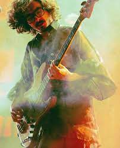

La Mejor Banda del Planeta.
Escuchalos y alegra tu vida
Escuchalos y alegra tu vida
Simón Vargas Morales Vocalista y bajista de Morat, también maneja los sintetizadores. Es escritor, en 2020 presentó su primer libro "A la orilla de la Luz". Estudió Historia en la Universidad de los Andes. En el 2020 creó en conjunto con la youtuber mexicana Nath Campos un podcast en Spotify llamado "Simón dice, Nath contradice".

Juan Pablo Isaza Piñeros Vocalista principal y guitarrista de Morat, también toca piano. Estudia Administración de Empresas en la Universidad de los Andes, está estudiando una segunda carrera con énfasis musical y es cofundador de la casa de producción Mapache.
Juan Pablo Villamil Cortés Vocalista principal de Morat, toca el banjo, ukelele y guitarra. Es egresado de Ingeniería Industrial de la Universidad de los Andes.
Martín Vargas Morales Vocalista y baterista de Morat. Es egresado de Diseño Gráfico de la Universidad de los Andes. Es cofundador de la marca General Studios.